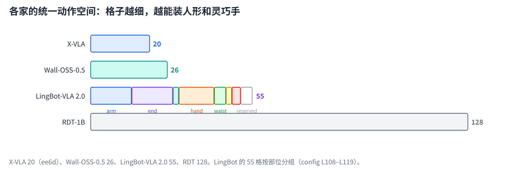
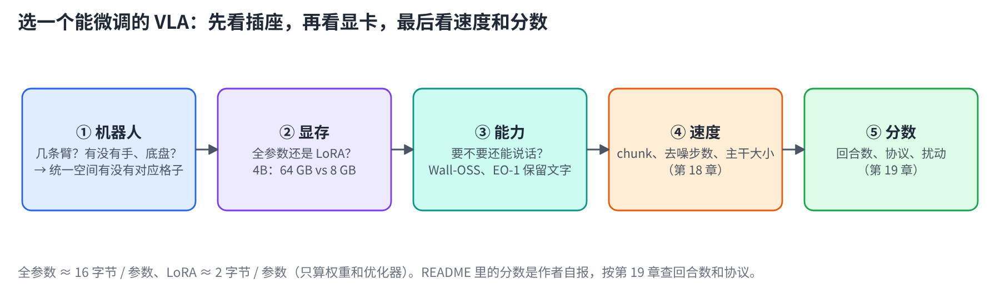
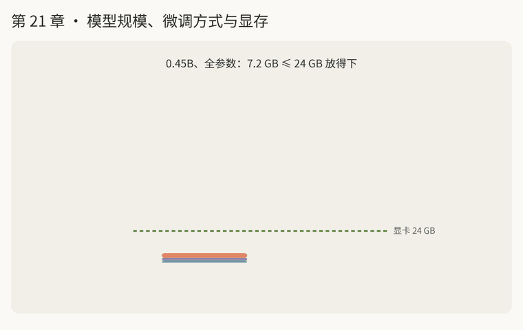

第 21 章 · 2026 开源 VLA：读一份 config，选一个能微调的模型
本地运行
git clone https://github.com/wikieden/vla-from-scratch
cd vla-from-scratch/code/notebooks
pip install jupyterlab torch numpy
jupyter lab ch21_open_models_2026.ipynb也可以下载后直接用 VS Code 打开 .ipynb 运行。需要 GPU 的章节在 Colab 里选「代码执行程序 → 更改运行时类型 → GPU」。
本章回答：LeRobot 里一下多了 X-VLA、Wall-OSS、LingBot-VLA 2.0、EO-1、EVO1、DM0.5、MolmoAct2、VLA-JEPA、FastWAM 这么多模型，怎么不读论文、只读 config 就看懂它们？各家的"万能插座"有几格？我的显卡能不能微调一个 4B 的 VLA？
讲解日期：2026-11-24 · 上一章：第 20 章 潜空间世界模型 · 下一章：—（全书完）
对应原文：materials/code/lerobot/repo/src/lerobot/policies/下各模型的configuration_*.py与README.md（每行标出文件和行号）；跨本体统一空间见第 16 章；训练显存见《从约束推导 AI Infra》第 56 章
本章缩写：MoE = Mixture of Experts（专家 / 混合）；LoRA = Low-Rank Adaptation（低秩 / 适配）；FFT = Full Fine-Tuning（全参数微调）；q01 / q99 = 1% / 99% 分位数；DiT = Diffusion Transformer；WAM = World Action Model（世界 / 动作 / 模型）；VQA = Visual Question Answering（视觉问答）。全表见 appendix-glossary.md
讲解
第 1 步：config 里看五个字段（2026-11-24）
类比：看二手车先看行驶证。 不用拆发动机，行驶证上排量、年份、车型、里程一写，心里就有数了。
第 14 章说看懂一个 VLA 只问三件事：动作怎么出、大脑小脑怎么连、吃了什么数据。落到 LeRobot 的 config 上，就是这五个字段：
| 字段 | 回答什么 | 讲在哪章 |
|---|---|---|
主干（vlm_base / vlm_model_name / tokenizer_path） |
大脑是谁、多大 | 第 5 章 |
| 动作头类型（flow / 离散 / 回归） | 动作怎么出 | 第 6–8、15 章 |
chunk_size / n_action_steps |
一次想几步、走几步 | 第 3 章 |
max_action_dim / 统一空间 |
万能插座几格 | 第 16 章 |
去噪步数（num_steps / num_denoising_steps / num_inference_steps） |
推一段动作要几步 | 第 8 章 |
例：按 config 默认值排成一张表（各文件的 configuration_*.py）：
| 模型 | 主干 | 动作头 | chunk | 动作维 | 去噪步 |
|---|---|---|---|---|---|
| SmolVLA（基线） | SmolVLM2-500M，只用前 16 层 | flow 专家 | 50 | 32 | 10 |
| π0.5（基线） | PaliGemma | flow 专家 | 50 | 32 | 10 |
| X-VLA | Florence-2 | flow Transformer + 软提示 | 32 | 20（ee6d） | 10 |
| Wall-OSS-0.5 | Qwen2.5-VL（4B 总量） | flow 专家，还能出文字 | 32 | 26 | 10 |
| LingBot-VLA 2.0 | Qwen3-VL-4B | 稀疏 MoE flow 专家 | 50 | 55 | 10 |
| EO-1 | Qwen2.5-VL-3B | flow 头 | 16 | 32 | — |
| EVO1 | InternVL3-1B，用 14 层 | flow 头 | 50 | 24 | — |
| DM0.5 | （OpenDM） | flow | 50 | 32 | — |
| MolmoAct2 | AI2 自家 VLM（README 未写型号），默认 LoRA 训 | 连续 / 离散可选 | 30 | — | 8（README L73） |
| VLA-JEPA | Qwen3-VL | DiT-B flow 头 + 训练时的 V-JEPA2 世界模型 | 7 | 7 | — |
| FastWAM | Wan2.2-TI2V-5B 视频模型 | 训练时想象、推理时不想象 | 32 | 7 | 10 |
（"—"是 config 里没有直接写成这几个字段名，或要从别的参数推出来的，没把握就不填。）
能看出的趋势：
- flow 动作头几乎成了标配，去噪 10 步是默认值（第 8 章 π0 的选择）；
- 大脑换成 Qwen 系（Qwen2.5-VL、Qwen3-VL）的越来越多；
- 统一动作空间成了每家的必答题：20、26、32、55 格不等；
- 世界模型开始以"训练时陪练"的身份进来（VLA-JEPA、FastWAM，第 20 章）。
一句话：五个字段：谁当大脑、动作怎么出、一次几步、插座几格、推几步。
第 2 步：各家的万能插座（2026-11-24）
类比：同样是收纳盒，有的只分 20 格，有的分 55 格还标好了"放手表""放耳机"。 格子越细，能装的东西越多，但每样东西都得找到自己那一格。
第 16 章的 RDT 用 128 格。2026 的几家：
| 模型 | 格数 | 怎么分 | 出处 |
|---|---|---|---|
| X-VLA | 20 | 两只手的 xyz + 6D 旋转 + 夹爪（末端空间） | xvla/action_hub.py L113–L130 |
| Wall-OSS-0.5 | 26 | 规范化的状态 / 动作表示，q01/q99 范围归一化 | wall_oss_05/README.md L27–L31 |
| LingBot-VLA 2.0 | 55 | 臂关节 14 + 末端 14 + 夹爪 2 + 灵巧手 12 + 腰 4 + 头 2 + 底盘速度 3 + 预留 4 | lingbot_vla_v2/configuration_lingbot_vla_v2.py L108–L119 |
\(14 + 14 + 2 + 12 + 4 + 2 + 3 + 4 = 55\)。LingBot 的表里有手、腰、头，是给人形和带灵巧手的机器人准备的。
怎么把自己的机器人接进去：LingBot 的 README 给了一条真实的微调命令，用 state_slots / action_slots 指定"我的第几维放进哪一格"（lingbot_vla_v2/README.md L11–L20）：
lerobot-train \
--dataset.repo_id=your_dataset \
--policy.path=lerobot/lingbot_vla_v2_base \
--policy.state_slots='{"observation.state.arm.position": {"origin_keys": [{"observation.state": {"start": 0, "end": 6}}]}}' \
--policy.action_slots='{"action.arm.position": {"origin_keys": [{"action": {"start": 0, "end": 6}}]}}' \
--rename_map='{"observation.images.front": "observation.images.camera_top"}' \
--policy.repo_id=your_repo_id
意思是：我的 observation.state 第 0–5 维（6 个关节）放进 arm.position 那一组格子；动作同理。这就是第 16 章"按物理意义填格子"的工程写法。
q01 / q99 归一化：把每一维按训练数据的 1% 和 99% 分位数缩放到 \([-1, 1]\)，和第 6 章 OpenVLA 分箱、第 7 章 FAST 防异常值是同一个思路。

图 21-1 · 20、26、55、128 格：格子越细，越能装人形和灵巧手。
一句话：插座格数决定能接什么机器人；接入就是写清"我的第几维放哪一格"。
第 3 步：稀疏 MoE 动作专家，每次只用一部分（2026-11-24）
类比：医院的专科门诊。 32 个科室，每个病人只挂 4 个号；医院很大，但看一个病人用不了多少医生。
LingBot-VLA 2.0 的动作专家每一层都是稀疏 MoE（config L126–L145）：32 个专家、每个 token 选 4 个（token_num_experts = 32、token_top_k = 4），另有一个所有 token 都走的共享专家。
专家 FFN 的中间维 512、共享 FFN 704（L141–L142）：每个 token 实际走过的 FFN 宽度是 \(4 \times 512 + 704 = 2752\)，正好等于不用 MoE 时的 expert_intermediate_size = 2752（L127）。计算量和一个普通 FFN 一样，参数却多了很多：不同机器人、不同动作可以用不同的专家。
更细的 MoE 机制（路由、负载均衡）见《从约束推导 AI Infra》第 11 章 MoE。
一句话：专家多、每次只挑几个，参数大而计算不变。
第 4 步：我的显卡能不能微调（2026-11-24）
类比：搬家前量门框。 先算家具多大，再看门进不进得去。
《从约束推导 AI Infra》第 56 章讲过：混合精度 + Adam 全参数微调，每个参数要 16 字节（bf16 权重 2 + bf16 梯度 2 + fp32 主权重 4 + Adam 两个状态 8）；LoRA 冻住原权重，只存 bf16 权重 2 字节，再加很少的可训参数。只算权重和优化器状态（不算激活）：
| 模型规模 | 全参数微调（16 B/参数） | LoRA（≈ 2 B/参数） |
|---|---|---|
| 0.45B（SmolVLA） | 7.2 GB | 0.9 GB |
| 3B（EO-1 主干） | 48 GB | 6 GB |
| 4B（Wall-OSS-0.5） | 64 GB | 8 GB |
所以：24 GB 的消费卡全参数只够 SmolVLA 这一档；3–4B 要么 LoRA，要么上 80 GB 的卡。MolmoAct2 的 config 默认就是 train_mode_vlm = "lora"、lora_rank = 64（L345–L346）。激活还要另算，batch 和图像 token 越多越大（第 18 章）。
选型的顺序：
| 先问 | 再看 |
|---|---|
| 我的机器人几条臂、有没有手、有没有底盘？ | 哪家的统一空间有对应的格子（第 2 步） |
| 我有多少显存？ | 全参数还是 LoRA（本步） |
| 要不要它还能说话（问答、写子任务）？ | Wall-OSS、EO-1 这类保留文字输出的 |
| 部署要多快？ | chunk、去噪步数、主干大小（第 18 章） |
| 分数可信吗？ | README 的数是作者自报，回合数和协议按第 19 章查 |

图 21-2 · 先看插座对不对得上，再看显卡装不装得下，最后看快不快、分数可不可信。
一句话：全参数 16 字节、LoRA 约 2 字节；先量门框，再搬家具。
动画演示：显存够不够

可交互版：animations/21-open-models-2026.html（滑块：参数量 0.1–8 B、显卡显存 8–80 GB；下拉：全参数 / LoRA / 只推理）。
怎么看：
- 竖条是需要的显存，分成权重、梯度、优化器状态几段（第 4 步）；
- 虚线是显卡显存，超过就标红；
- 播放：0.45B 全参数 / 24 GB → 4B 全参数 / 24 GB（放不下）→ 4B LoRA → 4B 全参数 / 80 GB → 4B 只推理。
练习与作答记录
题 1（第 4 步）：一个 2B 的 VLA，全参数微调和 LoRA 各约要多少 GB（只算权重和优化器）？一张 24 GB 的卡能做哪一种？
作答记录：（待作答）
题 2（第 2 步）：SO-101 机械臂有 5 个关节 + 1 个夹爪。接进 LingBot-VLA 2.0 的 55 格时，state_slots 里你会把哪几维放进哪几组？用了 55 格里的几格？
作答记录：（待作答）
题 3（第 3 步）：如果把 LingBot 的路由改成 64 个专家、每个 token 选 8 个，专家中间维改成 256，共享 FFN 不变。每个 token 走过的 FFN 宽度是多少？和原来比，计算量变了吗？
作答记录：（待作答）
口诀
看车先看行驶证：大脑、动作头、几步、几格、推几步；
收纳盒格子越细，越能装手和腰，接入就写清放哪格；
专科门诊挂四个号，医院大，看一个人用不了多少医生；
全参十六字节，LoRA 两字节，先量门框再搬家。
本章复习卡片
V49（读 config 五个字段；flow + 10 步成标配；统一空间 20 / 26 / 55 / 128 格；LingBot 55 = 14+14+2+12+4+2+3+4）、V50（稀疏 MoE 4/32 = 12.5%，4 × 512 + 704 = 2752；全参数 16 B/参数、LoRA ≈ 2 B/参数）。练习做完后，按答错、卡住的地方再补。
附录 · 延伸阅读
留给以后深入学习用，不影响本章主线。★ 是建议先读的。
推荐阅读
| 读什么 | 读哪里 | 读它为了什么 |
|---|---|---|
| ★ LeRobot 各策略的 README | lerobot/policies/<名字>/README.md |
每个模型怎么装、怎么训、怎么评 |
| ★ 第 14 章 主流 VLA 全景 | 三问看懂一个 VLA | 本章的出发点 |
| 第 16 章 跨本体 | 统一动作空间 | 插座为什么要按含义分格 |
| 《从约束推导 AI Infra》第 56 章 | 16 字节 / 参数 | 微调显存的来历 |
| 《从约束推导 AI Infra》第 11 章 MoE | 路由与负载 | 稀疏动作专家 |
| LingBot-VLA 2.0 论文 | arXiv 2607.06403，本地无原文 | 55 维空间和 MoE 专家的设计理由 |
| Fast-WAM | arXiv 2603.16666，本地无原文；见《世界模型与 WAM 流派》第 5 章 | 视频模型当策略 |
数学原理
- 稀疏激活：E 个专家选 k 个，每个 token 的专家计算量是全部激活时的 k/E；参数量按 E 算。
- 训练显存：全参数 \(\approx 16N\) 字节（N 是参数量）；LoRA 冻住的权重 \(2N\) 字节，可训的低秩矩阵 \(2 \times r \times (d_{in} + d_{out})\) 个参数，r 很小时可以忽略。
- 分位数归一化：\(x' = 2\,\frac{x - q_{01}}{q_{99} - q_{01}} - 1\)，再截到 \([-1, 1]\)。
公式清单
| 公式 | 意思 |
|---|---|
| \(14 + 14 + 2 + 12 + 4 + 2 + 3 + 4 = 55\) | LingBot 的统一空间 |
| \(k/E = 4/32 = 12.5\%\) | 每个 token 用到的路由专家比例 |
| \(k \times d_{\text{expert}} + d_{\text{shared}} = 2752\) | 每个 token 走过的 FFN 宽度 |
| 全参数 \(16N\)、LoRA \(\approx 2N\) 字节 | 微调显存粗估 |
| \(x' = 2(x - q_{01})/(q_{99} - q_{01}) - 1\) | q01/q99 归一化 |
代码对照：把本章的数字用代码算一遍
纯 Python。代码在仓库本地
vla-deep-dive/solutions/chapter-code/ch21_open_models_2026.py，配套测试tests/test_ch21.py：
bash cd vla-deep-dive/solutions/chapter-code uv run python ch21_open_models_2026.py uv run pytest tests/test_ch21.py
讲义 ↔ 代码：
| 讲义 | 写法 | 跑出来 |
|---|---|---|
| 第 1 步 | MODELS |
11 个模型的五个字段 |
| 第 2 步 | LINGBOT_CANONICAL、canonical_dim(...) |
55 |
| 第 2 步 | quantile_normalize(x, q01, q99) |
把 [q01, q99] 映到 [−1, 1] |
| 第 3 步 | moe_active_fraction(32, 4)、moe_active_width(4, 512, 704) |
12.5%；2752 |
| 第 4 步 | finetune_gb(params_b, mode) |
0.45B：7.2 / 0.9 GB；4B：64 / 8 GB |
代码里才看得到的 3 件事：
MODELS里的数都是 config 的默认值；同一个模型在 LIBERO 上微调时常改（比如 DM0.5 的 LIBERO 配方把 chunk 改成 10，README L30–L31）。finetune_gb只算权重和优化器状态，不算激活和 LoRA 的那一点可训参数；真实显存还要加激活，图像 token 多时激活可能比权重还大。quantile_normalize会把超出 [q01, q99] 的值截到 ±1；分位数之外的极端动作在训练时就被压扁了，所以动作分布很长尾的任务要小心。
自己改一改（不影响练习答案）：
- 给
MODELS加一列"总参数量"，从 README 里查着填。 - 用
finetune_gb画出 0.1–8B 的全参数和 LoRA 曲线，标出 24 GB 和 80 GB 两条线。 - 改
moe_active_width的参数，找出"计算量不变、专家数翻倍"的组合。